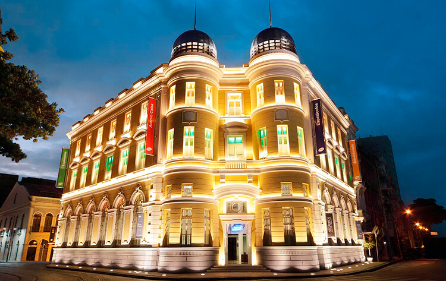
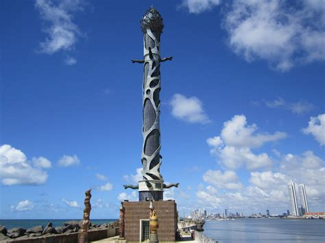
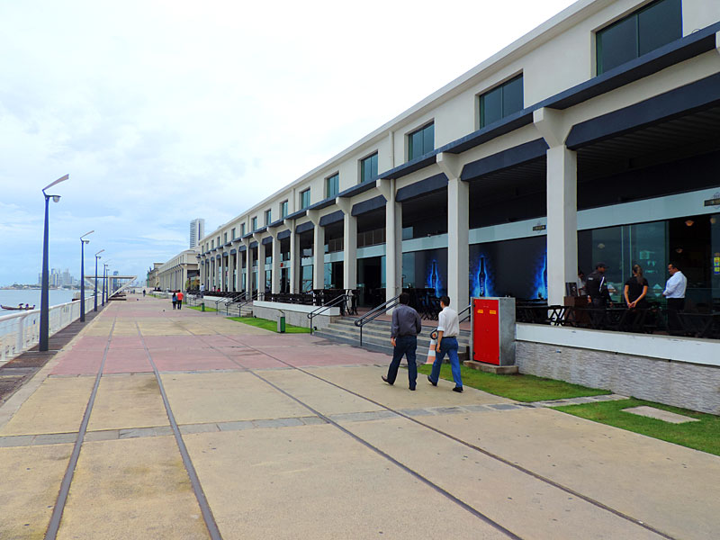
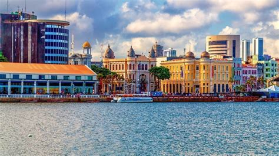

Edifício da Caixa Cultural
Localizada a poucos metros da Praça do Marco Zero, o edifício Caixa Cultural também valoriza a história local. Construído em 1912, o espaço funcionou durante muito tempo como a Bolsa de Valores de Pernambuco. Atualmente é palco de diversas exposições que valorizam a música, o teatro e outras manifestações culturais. O espaço está aberto para visitação de terça a domingo, das 10h às 18h. A entrada é gratuita.
Parque das esculturas – Francisco Brennand
O Parque das Esculturas homenageia o artista pernambucano Francisco Brennand, pois destaca as suas principais obras no local. O atrativo reúne cerca de 90 esculturas, representadas em uma exposição ao ar livre. Entre as principais obras do autor se destaca a Torre de Cristal, com aproximadamente 32 metros de altura. Por fim, para chegar ao local é preciso alugar um barco a partir do Marco Zero ou ir de carro pela Avenida Brasília Teimosa. O passeio é gratuito.
Armazém do Porto
Situado às margens do estuário de Pernambuco, o Armazém do Porto é um convite para conhecer a culinária do nordeste enquanto se encanta com uma vista encantadora do porto de Recife. No espaço, estão localizados cafés, bares e restaurantes que servem pratos, lanches e bebidas. O espaço está aberto de domingo a quarta-feira, das 10h às 22h, quinta-feira, das 10h à 00h e sexta e sábado, das 10h às 3h.
Curtiu o roteiro? Então, programe-se quanto antes para visitar o Marco Zero, em Recife!